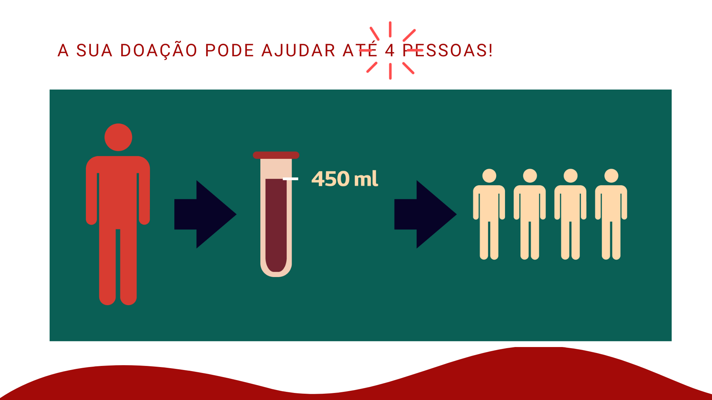

<!-- <div class="jumbotron jumbotron-fluid mt-5 mb-0 py-4 ">
  <div class="container">
    <h3 class=" text-center my-3">Doe para um usuário</h3>
    <p style="font-size: 16px;" class="lead text-justify text-center">Selecione as informações nos campos abaixo para
      encontrar pedidos de doação que correspondam ao seu tipo sanguíneo e localização:.</p>
  </div>
</div> -->


<!-- CONTAINER 1 -->
<!-- 
<div class="container container-hospital mt-3">
  <div class="row d-flex justify-content-center align-items-center">
    <div class="col-md-6 mr-0">

      <div class="col-md-6 mr-0 text-center">
        <label class="" for="tema">Escolha um tipo sanguíneo</label>
        <select id="tipo-sangue" name="sangue" class="form-control">
          <option value="" disabled selected>Tipo sanguíneo</option>
          <option value="Prefiro não informar">Prefiro não informar</option>
          <option value="A+">A+</option>
          <option value="A-">A-</option>
          <option value="B+">B+</option>
          <option value="B-">B-</option>
          <option value="O+">O+</option>
          <option value="O-">O-</option>
          <option value="AB+">AB+</option>
          <option value="AB-">AB-</option>
          <option value="RH nulo">RH nulo</option>
        </select>
      </div>

      <div class="col-md-6 mt-3 mr-0 text-center">
        <label class="" for="tema">Escolha um Estado</label>
        <select id="estado" name="Estado" class="form-control">
          <option value="" disabled selected>estado</option>
          <option value="São Paulo">São Paulo</option>
          <option value="Rio de Janeiro">Rio de Janeiro</option>
        </select>
      </div>

      <div class="col-md-6 mt-3 mr-0 text-center">
        <label class="" for="tema">Escolha uma Cidade</label>
        <select id="cidade" name="Cidade" class="form-control">
          <option value="" disabled selected>cidade</option>
          <option value="São Paulo">São Paulo</option>
          <option value="Rio de Janeiro">Rio de Janeiro</option>
        </select>
      </div>


      <div class="row mb-5">
        <div class="col-md-12 d-flex justify-content-center">
          <button class="btn btn-outline-success w-25 mt-5">Buscar</button>
        </div>
      </div>


    </div>
  </div>
</div> -->

<!-- CONTAINER 1 -->


<!-- CONTAINER 2 -->

<!-- <div class="jumbotron jumbotron-fluid  mb-0 py-4 ">
  <div class="container">
    <h3 class=" text-center my-3">Pedidos de doação</h3>
    <p style="font-size: 16px;" class="lead text-justify  text-center">Encontramos os seguintes pedidos com as
      informações correspondentes ao seu
      tipo sanguíneo e localização:</p>
  </div>
</div> -->


<!-- COLLAPSE -->
<!-- <p class="text-center mt-4">
  <a class="btn text-white w-25 text-center" style="background-color: var(--primary-green);display: inline-block;"
    data-toggle="collapse" href="#collapseExample" role="button" aria-expanded="false" aria-controls="collapseExample">
    Informações gerais e requisitos
  </a>

</p>
<div class="collapse" id="collapseExample">
  <div class="card card-body"> -->


    <!-- CONTEUDO -->


    <!-- CARD-DECK1 -->
    <!-- <div class="card-deck">
      <div class="card">
        
        <div class="card-body">
          <h5 class="card-title">1) Condições básicas para doação</h5>
          <p class="card-text">
            <ul>
              <li>Sentir-se bem, com saúde.</li>
              <li>Apresentar documento com foto, emitido por órgão oficial e válido em todo o território nacional.</li>
              <li>Ter peso acima de 50kg.</li>
              <li>Ter entre 16 e 69 anos; a primeira doação deve ter acontecido até os 60 anos. Menores de 18 anos
                necessitam de autorização por escrito do responsável legal.</li>
            </ul>
         
        </div>
      </div>
      <div class="card">
        
        <div class="card-body">
          <h5 class="card-title">2) Quem não pode doar </h5>
          <p class="card-text">
            <ul>
              <li>Quem teve diagnóstico de hepatite após os 11 anos de idade.</li>
              <li>Mulheres grávidas ou que estejam amamentando.</li>
              <li>Pessoas que estão expostas a doenças transmissíveis pelo sangue como AIDS/HIV, Hepatite, Sífilis e
                Doença
                de Chagas.</li>
              <li>Como critério para a seleção dos doadores, no dia da doação os antecedentes e o estado atual do
                candidato a
                doador serão avaliados para determinar se a coleta pode ser realizada sem causar prejuízo à saúde do
                doador
                e/ou risco aos receptores.</li>
            </ul>
          </p>
        </div>
      </div>
      <div class="card">
        
        <div class="card-body">
          <h5 class="card-title">3) No dia da doação</h5>
          <p class="card-text">
            <ul>
              <li>Nunca doar sangue em jejum.</li>
              <li>Fazer um repouso mínimo de 6 horas na noite anterior à doação.</li>
              <li>Não ingerir bebidas alcoólicas nas 12 horas anteriores à doação.</li>
              <li>Evitar fumar por pelo menos duas horas antes e depois da doação.</li>
              <li>Evitar ingerir alimentos gordurosos.</li>
            </ul>

          </p>
        </div>
      </div>
    </div> -->

    <!-- / CARD-DECK1-->

    <!-- CARD-DECK2 -->

    <!-- <div class="card-deck">
      <div class="card">
        
        <div class="card-body">
          <h5 class="card-title">4) O que acontece com o sangue doado? </h5>
          <p class="card-text">
            O sangue doado é separado em diferentes componentes como hemácias, plaquetas, plasma e outros, e assim
            poderá beneficiar mais de um paciente com apenas uma unidade coletada.

            Os componentes são utilizados para atendimentos de urgência, a realização de cirurgias eletivas de grande
            porte e o tratamento de pessoas com doenças crônicas e doenças oncológicas variadas que necessitam de
            transfusão frequentemente.
          </p>
        </div>
      </div>
      <div class="card">
        
        <div class="card-body">
          <h5 class="card-title">5) Intervalo entre doações</h5>
          <p class="card-text">
            Homens - a cada 2 meses, no máximo 4 doações ao ano.
            Mulheres - a cada 3 meses, no máximo 3 doações ao ano.
          </p>
        </div>
      </div>
      <div class="card">
        
        <div class="card-body">
          <h5 class="card-title">6) Algo aqui</h5>
          <p class="card-text">
            Homens - a cada 2 meses, no máximo 4 doações ao ano.
            Mulheres - a cada 3 meses, no máximo 3 doações ao ano.
          </p>
        </div>
      </div>
    </div> -->

    <!-- / CARD-DECK2 -->

    <!-- / CONTEUDO -->


<!-- 
  </div>
</div> -->

<!-- / COLLAPSE -->


<!-- 

<div class="container  mb-5 ">
  <div class="row d-flex justify-content-center align-items-center  mb-5">
    <div class="col-md-12 mb-5">


      <table class="table table-hover">
        <thead>
          <tr>
            <th scope="col">#</th>
            <th scope="col">Descrição</th>
          </tr>
        </thead>

      </table>


    </div>
  </div>
</div> -->

<!-- CONTAINER 2 -->
